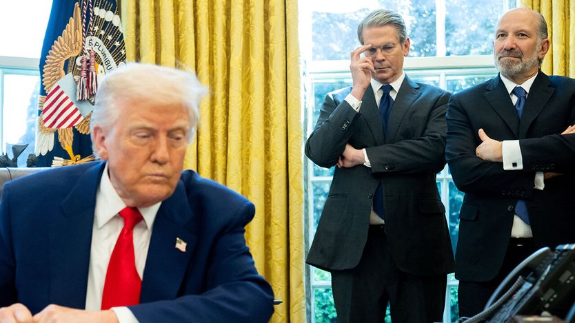

黄仁勋丑闻烧到特朗普内阁
The Jensen Huang scandal reaches Donald Trump’s cabinet
美国商务部长霍华德·卢特尼克正处在风口浪尖

- 黄仁勋因性丑闻、芯片走私与中国情报人员的调查辞职，这不只是英伟达的公司治理事件，还可能拖垮商务部长卢特尼克，并改变美国对华技术政策的鹰鸽平衡。
- 争点在于商务部对英伟达是否过于顺从：针对 Megaspeed 的调查在英伟达律师致电后撤销，而财政部、五角大楼、国务院都主张把这家公司列入实体清单，掌清单的商务部却没有动。
- 国会两党已把四项芯片管制条款挂上必须通过的国防授权法案，从把对华芯片销售当军售来管，到核查芯片位置、限制中国租用云端算力，黄仁勋辞职给了它们新的推力。
- 对企业的含义是，英伟达面对的不再是关税式摩擦，而是许可证、位置核查与云租算力三层管制，中国业务的可预期性明显下降。
就在几周前，英伟达（Nvidia）的掌门人黄仁勋还差不多就坐在特朗普总统的右手边——在一众科技巨头中间居于首位。11月12日，他在执掌公司33年后辞职，起因是一桩离奇丑闻，牵涉性、芯片走私与中国情报人员——顺序未必如此。黄仁勋的离场至今仍在人工智能世界引发余波。但它也可能拖垮特朗普政府的成员——最突出的是商务部长霍华德·卢特尼克（Howard Lutnick）——并导致美国对华政策转硬。
这桩丑闻部分关乎黄仁勋的判断力。他被指涉及三段婚外情：两段与英伟达员工，第三段的对象是黄爱丽丝（Alice Huang，与他无亲属关系），她是Megaspeed International的中国籍高管，被怀疑与中国情报机构有关系。（美国官员对这些关系的性质意见不一。）Megaspeed曾购入价值超过48亿美元的英伟达芯片，其中至少一部分随后经由马来西亚与印度尼西亚的服务器被中国客户远程使用。那大概是合法的。另一些芯片则可能被非法转运至中国。
于是商务部登场，它掌管美国的出口管制。据信卢特尼克与副手杰夫·凯斯勒（Jeff Kessler）与英伟达关系异常密切。在英伟达首席律师蒂姆·泰特（Tim Teter）联系凯斯勒之后，一项针对Megaspeed的调查被撤销。（接近英伟达的人士称，泰特的接触只是例行公事。）利益冲突也存疑。卢特尼克经营数十年、现由其子掌管的投资公司康托·菲茨杰拉德（Cantor Fitzgerald），曾为东南亚的数据中心企业安排融资，而这些企业可能因芯片管制收紧而受损。拜登政府时期负责对华技术竞争事务的克里斯·麦圭尔（Chris McGuire）说，商务部“把全部规则制定与执法都外包给了英伟达”，对黄仁勋表现出“完全的顺从”。
卢特尼克也遭到一些同僚批评。11月13日，财政部长斯科特·贝森特（Scott Bessent）对先进英伟达芯片流入中国表达不满。他说，财政部、五角大楼、国务院与美国贸易代表办公室都主张把Megaspeed列入受美国贸易限制的“实体清单”。但掌管该清单的商务部显然没有行动。“笔在商务部手里，”贝森特说，一边急切地把同僚推下车，“你们得去问他们的内部流程。”司法部长托德·布兰奇（Todd Blanche）态度更支持，11月12日称他对商务部“没有疑虑”。
如果黄仁勋丑闻真的把卢特尼克拉下马，就可能改变美国对华技术政策中鹰派与鸽派的力量对比。“其他每个机构……都采取了相对强硬的路线，尤其是最近几个月，”麦圭尔说，并指出贝森特推出的对外投资收紧政策，以及联邦通信委员会、国土安全部和五角大楼采取的类似举措。这一切发生在特朗普即将于11月18日至19日在深圳会见中国领导人习近平之前没几天。
卢特尼克还可能面临国会的审视，而民主党人即将重新夺回国会。政府对芯片出口的宽松态度不仅激怒了鹰派，也激怒了许多左翼人士，比如参议院银行委员会首席民主党人伊丽莎白·沃伦（Elizabeth Warren），她一直呼吁加强管制。民主党人可能动用新权力，就Megaspeed、卢特尼克对黄爱丽丝疑似情报关系的知情程度、以及未能收紧出口管制等问题质询英伟达与商务部。这些问题还可能追到特朗普头上——据《纽约时报》报道，他早在去年就被告知了有关黄爱丽丝的指控。
国会已在设法堵住美国出口管制体系的漏洞。议员们在一项名为NDAA的国防授权法案上挂了一堆涉及人工智能与芯片的条款。《人工智能监督法案》将赋予国会对华先进芯片销售更大权力，把这类销售更接近于军售来对待。《MATCH法案》针对制造芯片所需的设备，尤其是荷兰公司阿斯麦（ASML）生产的深紫外光刻机。《芯片安全法案》要求采取措施核实芯片位置以防走私。而独立的《远程访问安全法案》——也可能并入NDAA——将限制中国通过云服务商租用先进芯片的能力。
在黄仁勋辞职后，这些提案获得新的动力；而且由于多数条款都写进了一项必须通过的国防法案，特朗普不太可能否决。支持者从共和党籍众议院议长迈克·约翰逊（Mike Johnson）到可能在明年1月接任议长位置的民主党人哈基姆·杰弗里斯（Hakeem Jeffries）。OpenAI也与Anthropic一道支持这些措施。即便卢特尼克保住职位，他的手也可能越来越被捆住。■